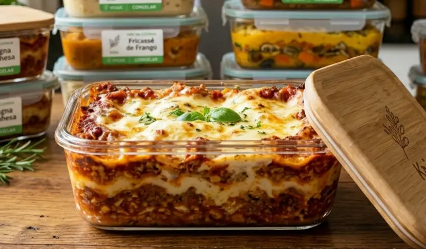
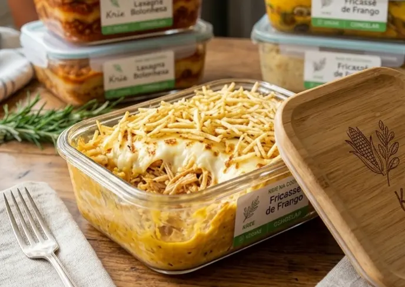
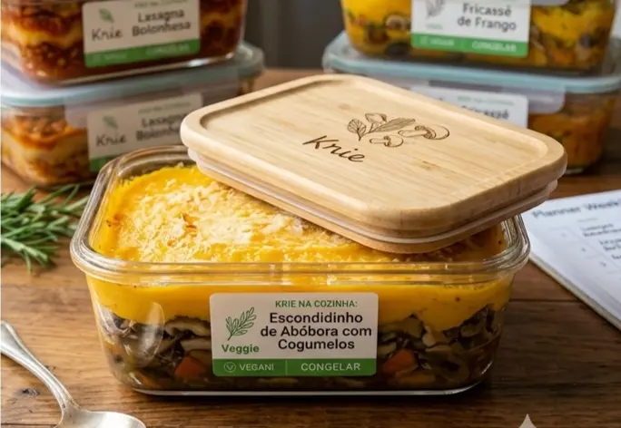
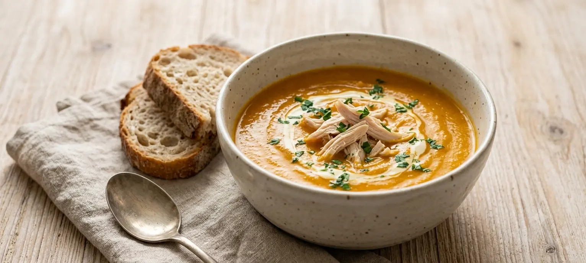
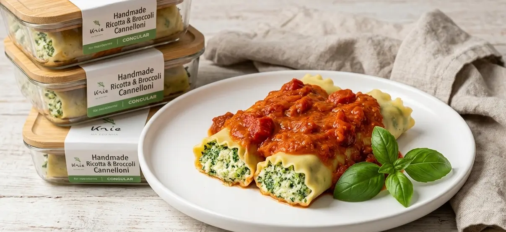
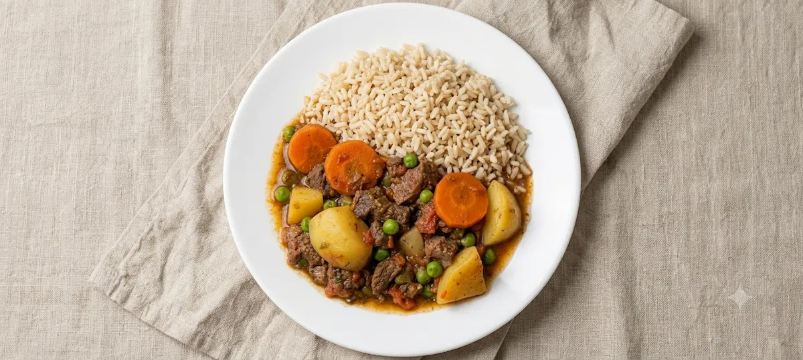

Beef
Special Bolognese Lasagna
Handmade pasta layered with rustic meat sauce, ham and cheese. Excellent freezer stability.
#⏱️# Reheating time: 15minAll the recipes below have been balanced and tested to ensure they retain their flavor, nutrients, and ideal texture after thawing.

Handmade pasta layered with rustic meat sauce, ham and cheese. Excellent freezer stability.
#⏱️# Reheating time: 15min
Shredded chicken breast with light creamed corn, perfect for freezing in individual portions.
#⏱️# Reheating time: 12min
Creamy butternut squash purée stuffed with a mix of mushrooms sautéed in herb-infused olive oil.
#⏱️# Reheating time: 15min
Velvety butternut squash soup infused with aromatic herbs, with tender shredded chicken breast. Freezes beautifully without losing texture.
#⏱️# Reheating time: 10min
Delicate pasta tubes generously stuffed with a creamy blend of fresh ricotta cheese and tender broccoli florets, smothered in a rich, rustic tomato sauce and topped with fresh basil. Perfect for individual portions.
#⏱️# Reheating time: 14min
Slow-cooked Brazilian beef stew with generous chunks of tender beef, large rustic potato wedges, and vibrant carrot slices, in a deep, rich gravy. Perfect for quick individual meals.
#⏱️# Reheating time: 15min